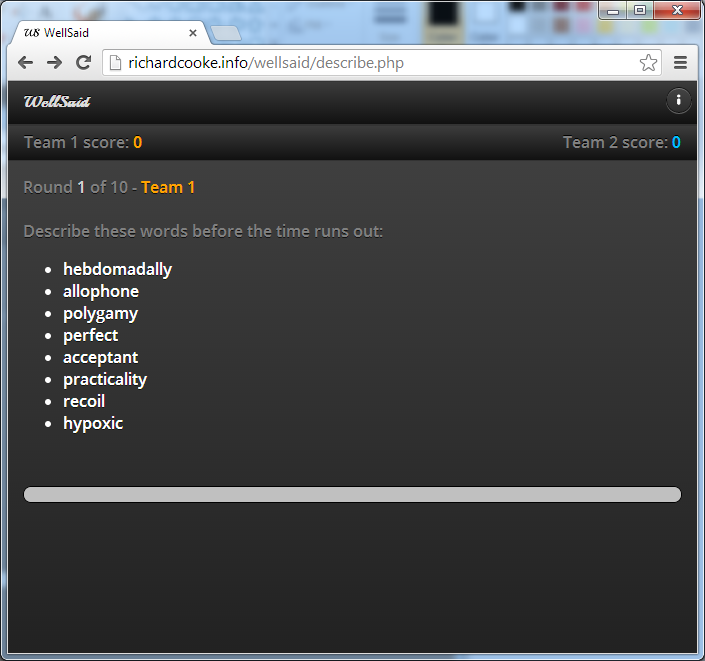
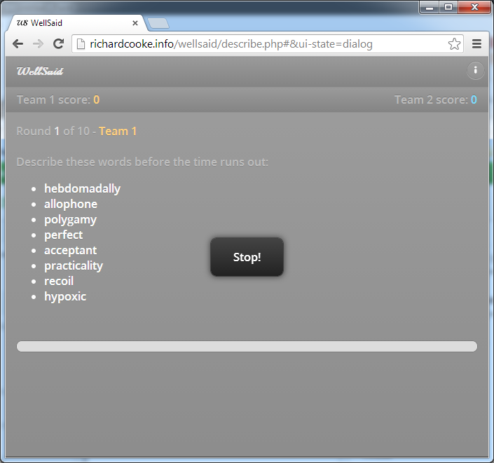

This function adds a jQuery Mobile popup programmatically to a page and displays it. The user needs to click to dismiss it. If you want it to fade automatically then close it using setTimeout().
function notify(message)
{
var id = "popupid";
try {$("#"+id).remove();} catch(e) {}
var popup = document.createElement('div');
popup.setAttribute("data-role", "popup");
popup.setAttribute("data-transition", "pop");
popup.setAttribute("data-theme", "a");
popup.setAttribute("data-overlay-theme", "c");
popup.setAttribute("id", id);
popup.innerHTML = "<p style='margin:1em 2em 1em 2em'>" + message + "</p>";
$('div[data-role="content"]').append(popup);
$("#"+id).popup();
$("#"+id).popup("open");
};
notify("Stop!");
And this is the page with the notification: 